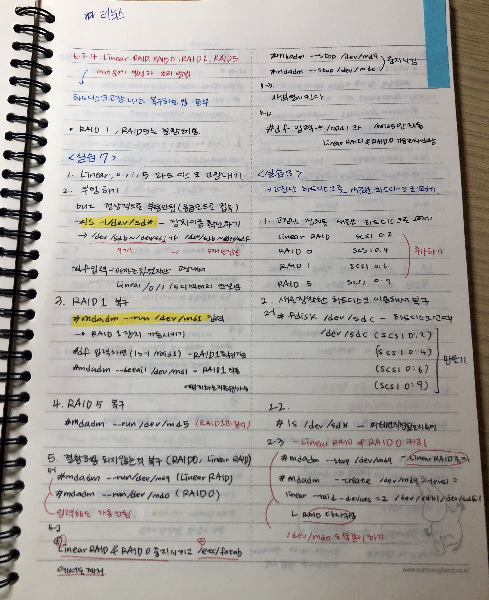
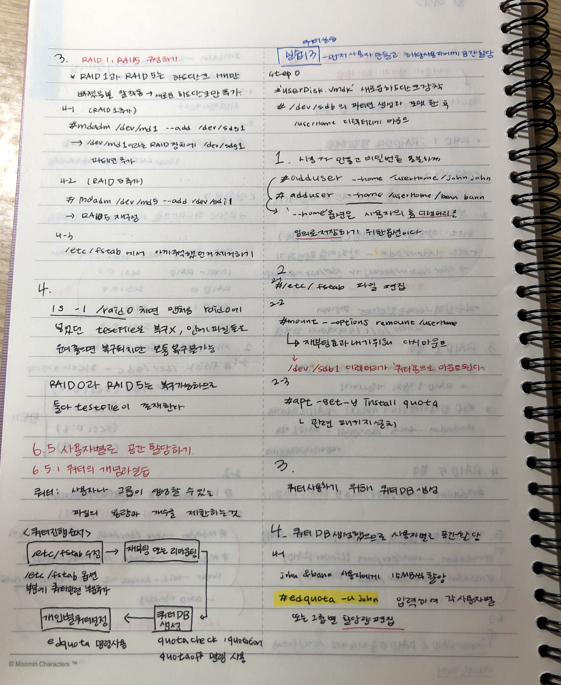
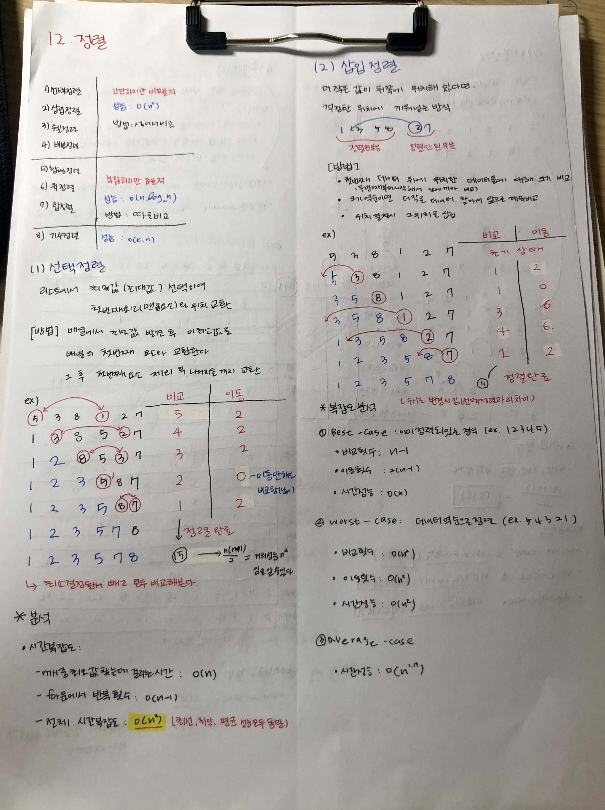
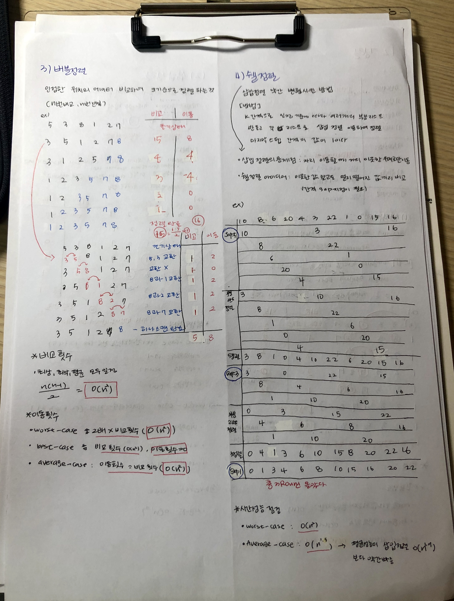
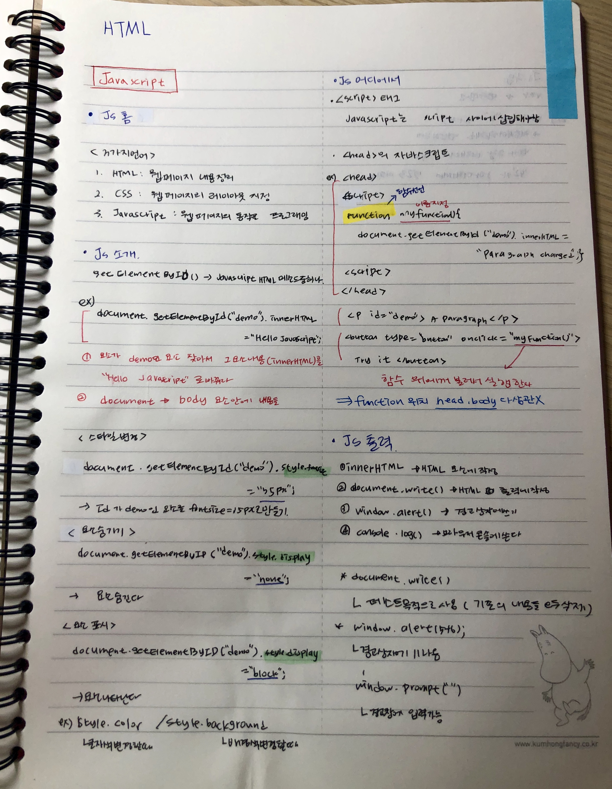
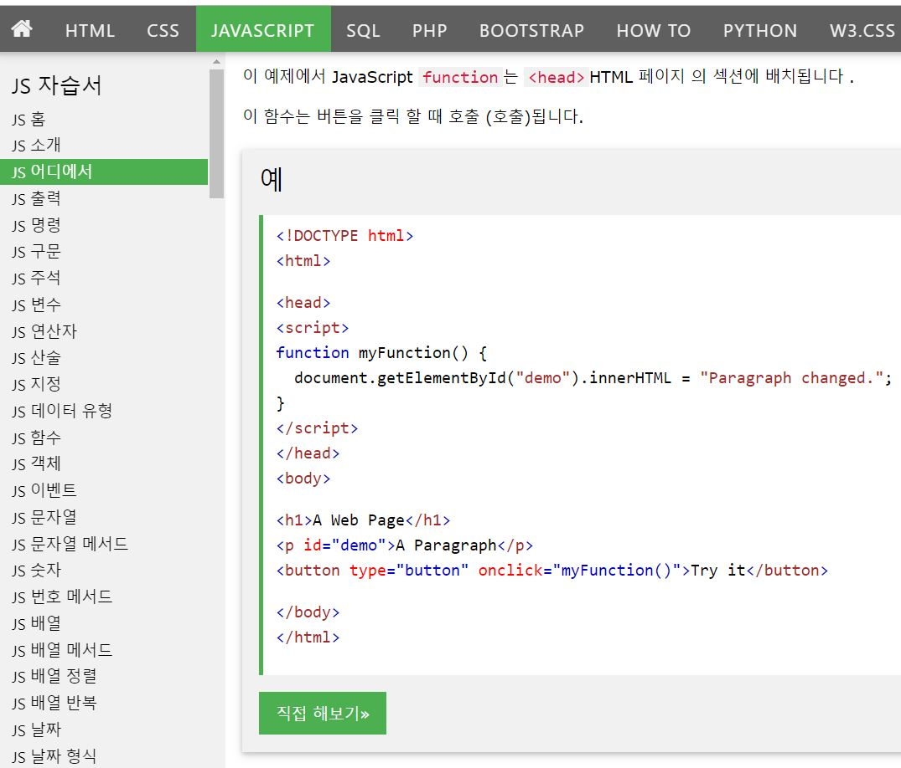
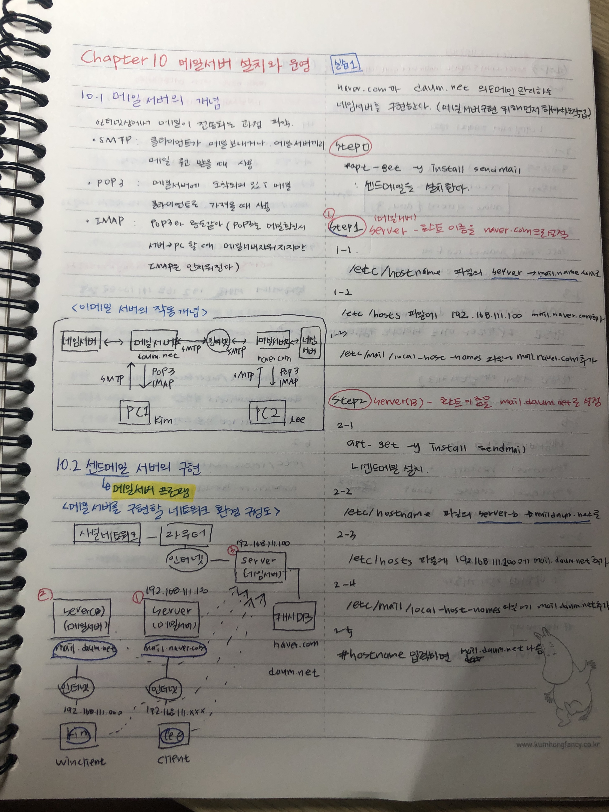
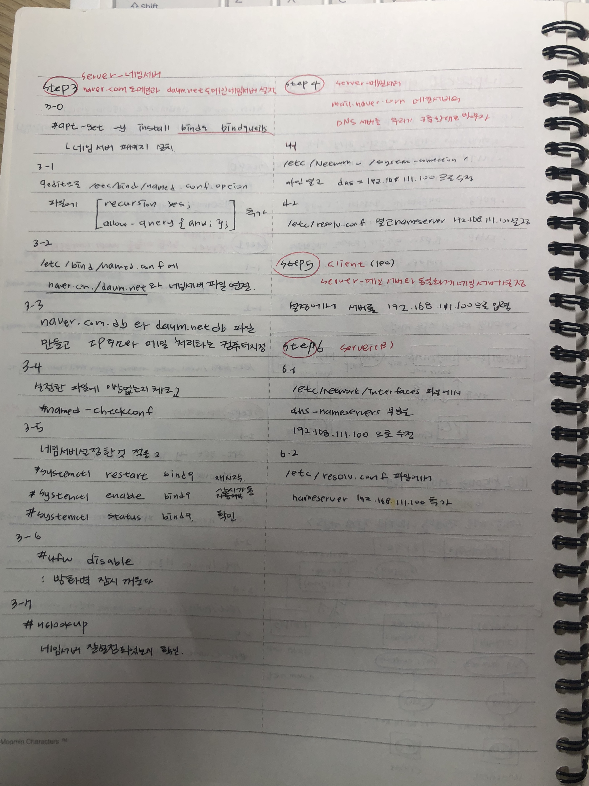

C++ 복습
객체지향언어, May 20, 2019

*함수의 오버라이딩 : 기반클래스에 정의되어 있는 함수와 동일한 형태로 파생 클래스에서 다시 정의하는 것이다. 이때 멤버함수 반환값과 매개변수의 자료형과 매개변수 개수가 같아야한다.

*업캐스팅 : 기반클래스의 포인터 변수가 파생클래스의 인스턴스 가리키는 것이다.
*다운캐스팅 : 파생클래스로 선언된 포인터변수에 기반클래스로 선언된 객체주소 저장하는것이다.
*다운캐스팅 : 파생클래스로 선언된 포인터변수에 기반클래스로 선언된 객체주소 저장하는것이다.
Daily ->
오늘은 함수의 오버라이딩과 업케스팅 그리고 멤버함수 오버라이딩에 대해서 공부했다. 점점 가면 갈수록 내용이 어려워지지만 그래도 그만큼 시간을 더 투자하려고 하고 있다.
리눅스 복습
리눅스, May 23, 2019

*하드디스크 복구 : Raid1과 Raid5는 결함이 허용되어 복구 할 수 있고 Raid0과 Linear Raid는 결함이 허용 되지 않기 때문에 복구가 어렵다.

*쿼터 : 사용자는 하드디스크에 용량을 추가할 수 있는데 그렇게 되면 하드디스크에 용량이 너무 오버되기 때문에 사용자나 사용자 그룹에 대한 파일의 용량과 개수를 제한하는 과정이다.
Daily ->
하드디스크에 설치된 Raid장치들이 돌아가는 구조와 결함허용에 유무에 대해 정확히 이해하고 hard와 soft의 차이와 저장 방식을 정확히 이해하고 넘어가야 이 부분에서 정확한 공부를 했다고 할 수 있는 것 같다.
자료구조 복습
HTML, May 29, 2019

*정렬 : 정렬 방식에는 선택정렬,삽입정렬, 쉘정렬, 버블정렬, 합병정렬, 힙정렬등이 있는데 어떤 코딩 방식이냐에 따라 어떤 정렬을 사용해야 더 빠른 성능을 가질지에 관한 여부가 달라진다. 그러므로 알맞는 정렬방식을 선택해야 한다.

*쉘정렬 :쉘정렬은 삽입정렬과 비슷한 정렬방식으로 약간 변형 시킨 방식이다. 쉘정렬은 간격을 나눠서 하는 방식으로 멀리 떨어진 값끼리도 비교가 가능하다.
*버블정렬 : 버블정렬은 가장 사용되지 않는 방식으로 모든 값을 하나씩 다 비교해보기 때문에 성능이 떨어진다.
*버블정렬 : 버블정렬은 가장 사용되지 않는 방식으로 모든 값을 하나씩 다 비교해보기 때문에 성능이 떨어진다.
Daily ->
직접 그림을 그려가면서 정렬 방식의 이해에 도움을 주었고 어떠한 프로그램이 들어올 때 어떤 정렬 방식이 가장 좋은 성능을 가지고 있을지에 대한 생각도 하면서 정렬을 이해하려고 했다. 이렇게 여러 사고를 하면서 이해함으로써 더욱 더 향상된 이해를 할 수 있었다.
HTML 복습
HTML, June 6, 2019

*Javascript : 자바스크립트는 웹페이지의 동작을 관리하여 프로그래밍하는 것이다.document.getElmentById(" ").innerhtml과 같은 용어를 이용하여 동작을 관리한다.

w3school.com에 있는 javascript자습서를 통해서 더욱더 높은 이해를 이끌었다.
Daily ->
Javascript를 공부하면서 조금 더 HTML을 동적으로 사용할 수 있는 것 같고 조금 더 머리를 쓰면서 공부를 해야할 것 같다.
리눅스 복습
리눅스, June 7, 2019

*센드메일 서버 : 다른 서버에서 서로 메일을 주고 받을 수 있는 환경을 구축하고 client와 winclinet가 메일을 주고 받고 하는 환경을 만든다.

*도메인 설정 : 네임서버 패키지를 설치하고 네임서버를 설정하여 네임서버 파일에 저장한다. 그리고 client에서도 메일 서버와 동일한 도메인서버로 설정한다.
Daily ->
센드 메일을 설치하고 서로 메일이 있다고 가정하여 구축한 후 도메인과 메인 서버의 설정을 통해 메일이 어떻게 수신 발신 되는지에 대한 공부를 했다.
Profile

박현정
April 29, 1999
Chungwoon University
Computer Engineeing
20180360
TIMETABLE
| 월 | 화 | 수 | 목 | 금 | |
|---|---|---|---|---|---|
| 9 | 객체지향언어 | 서버구축및 관리 |
인터넷활용 | ||
| 10 | 데이터베이스 | ||||
| 11 | |||||
| 12 | |||||
| 1 | 빛과 사진의 과학 |
인간 관계와 의사 소통 |
|||
| 2 | 자료 구조 |
자료 구조 |
|||
| 3 | |||||
| 4 |
PLAN
코딩의 왕 되기
6키로 감량
토익 목표점수 도달